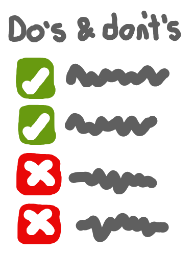

************* Module code
linting_resources/code.py:4:25: C0303: Trailing whitespace (trailing-whitespace)
linting_resources/code.py:1:0: C0114: Missing module docstring (missing-module-docstring)
linting_resources/code.py:1:0: C0116: Missing function or method docstring (missing-function-docstring)
linting_resources/code.py:1:0: C0103: Function name "MyFunction" doesn't conform to snake_case naming style (invalid-name)
-----------------------------------
Your code has been rated at 2.00/10✅ Linting
🔗 Reproducibility guidelines:
- NHS Levels of RAP (🥈): Code adheres to agreed coding standards (e.g PEP8, style guide for Pyspark).
Writing clean and consistent code is important: it makes code easier to read, debug and maintain. There are established conventions and tools to help you write high-quality code:


1 Style guides
A style guide is a set of rules and conventions for writing code. They cover topics like naming, code layout, syntax, docstrings, indentation. They help standardise code and improve readability.
Popular python style guides include:
PEP-8 - the official style guide for Python. This is supported by other Python Enhancement Proposal (PEP) documents, like PEP-257 which outlines docstring conventions.
Google Python Style Guide - used at google.
Popular R style guides include:
Tidyverse style guide - developed by the tidyverse team (creators of packages like
dplyr).Google style guide - adapted from the tidyverse guide for used at google.
You are not required to follow style guides, but they are recommended for writing clear, maintainable, and consistent code. The easiest way to enforce their requirements is using linters or code formatters.
2 Linters
Linters are tools that analyse code for:
- Possible errors - looking for issues like unused variables and code complexity.
- Style issues - enforcing requirements from style guides.
They are often run from the terminal/command line, and return a list of suggestions for you to address. Sometimes, they might flag code that you have intentionally written, and it’s okay to disagree with their suggestion to change it!
Popular linters in Python include:
pylint - detailed linter that detects errors, bugs, variable naming issues, and other code problems.
flake8 - lightweight tool focused on PEP-8 style, basic errors, and code complexity.
ruff - modern, ultra-fast linter that implements checks from Flake8 and some other popular plugins. It is also a code formatter (see below) - though note: the linter does not report every issue that can be fixed by the formatter. Stylistic issues are handled silently by the formatter and not surfaced as lint errors - so the linter is intentionally more restricted in scope than the formatter.
You can use several linters, or choose one that suits you best.
To better understand their differences, let’s run them on a some poor quality code. We can see that:
- Both identify the trailing whitespace.
- Pylint identifies the missing module and function docstrings, and the function name.
- Flake8 identifies the missing whitespace around an operator.
- Ruff did not identify any issues! This is because the linter incorporates some - but not all - of Flake8’s checks - and it doesn’t check whitespace by default.
code.py:
def MyFunction(a, b):
x=1
y = 2
print("Sum is:", a+b)
return x + yPylint:
pylint linting_resources/code.pyFlake8:
flake8 linting_resources/code.pylinting_resources/code.py:2:6: E225 missing whitespace around operator
linting_resources/code.py:4:26: W291 trailing whitespaceRuff:
ruff check linting_resources/code.pyAll checks passed!In R, the most popular and main option for linting is lintr. It enforces the tidyverse style guide, along with identifying some other wider issues like around efficiency and robustness.
As an example, we can run lintr on some poor quality code:
MyFunction <- function(a, b) {
x = 1L
y <- 2
cat("Sum is:", a + b)
x + y
}Lintr is executed from the R console:
lintr::lint("linting_resources/code.R")::warning file=/__w/des_rap_book/des_rap_book/pages/style_docs/linting_resources/code.R,line=1,col=1::file=/__w/des_rap_book/des_rap_book/pages/style_docs/linting_resources/code.R,line=1,col=1,[object_name_linter] Variable and function name style should match snake_case or symbols.
::warning file=/__w/des_rap_book/des_rap_book/pages/style_docs/linting_resources/code.R,line=2,col=5::file=/__w/des_rap_book/des_rap_book/pages/style_docs/linting_resources/code.R,line=2,col=5,[assignment_linter] Use one of <-, <<- for assignment, not =.
::warning file=/__w/des_rap_book/des_rap_book/pages/style_docs/linting_resources/code.R,line=3,col=9::file=/__w/des_rap_book/des_rap_book/pages/style_docs/linting_resources/code.R,line=3,col=9,[implicit_integer_linter] Use 2L or 2.0 to avoid implicit integers.3 Code formatters
Code formatters are tools that automatically format your code. They are typically designed to address code style (e.g. following style guidelines), rather than some of the wider issues that might be flagged by linters.
Popular code formatters in Python include:
black - very popular code formatter.
ruff - designed to be a drop-in replacement for
blackthat should have a near identical output, but runs faster.
As an example, if we ran either of these code formatters on our example by executing black linting_resources/code.py or ruff format linting_resources/code.py, they would alter the file as follows:
--- linting_resources/code.py +++ linting_resources/code.py @@ -1,5 +1,5 @@ def MyFunction(a, b): - x=1 + x = 1 y = 2 - print("Sum is:", a+b) + print("Sum is:", a + b) return x + y
Code formatters in R include:
styler - implements the tidyverse style guide (or can be customised to a different style).
formatR - designed to improve readability (e.g. addressing spaces, indentation, line breaks).
air - faster, modern code formatter (in beta as of June 2025).
As an example, if we ran styler on our example by executing styler linting_resources/code.R:
< original_code > styled_code
@@ 1,4 @@ @@ 1,4 @@
MyFunction <- function(a, b) { MyFunction <- function(a, b) {
< x = 1L > x <- 1L
y <- 2 y <- 2
cat("Sum is:", a + b) cat("Sum is:", a + b) 4 Using linters
This section takes a closer look at how to use linters in practice, focusing on pylint as a widely used example.
This section takes a closer look at how to use linters (specifically, lintr) in practice.
4.1 Linting different file types
First, make sure pylint is installed into your environment. It can be installed from conda or PyPI:
conda install pylintpip install pylintUsing pylint on .py files
Commands are executed from the terminal.
To lint a single file:
pylint file.pyTo lint multiple specific files:
pylint file1.py file2.pyTo lint all files in a directory (including subdirectories):
# Current working directory
pylint .# Specific directory called `dir/`
pylint dirUsing pylint on .ipynb files
The popular nbqa package is required to run pylint on Jupyter notebooks.
conda install nbqapip install nbqaTo run it, the commands are the same above, except that they are prefixed by nbqa - for example:
nbqa pylint file.ipynbUsing pylint on .qmd files
The lintquarto package can be used to run linters on quarto files.
# Install lintquarto from PyPI
pip install lintquartoTo run it, follow this format:
lintquarto [linter] [files or folders] [-k | --keep-temp][linter] - Choose one of the supported linters:
pylint,flake8,pyflakes,ruff,pylama,vulture,radon,pycodestyle,mypy,pyright,pyrefly, orpytype[files or folders] - One or more
.qmdfiles or directories to lint.-k, –keep-temp - Keep the temporary
.pyfiles created during linting (for debugging).
So, for example, to run pylint:
lintquarto pylint file.qmdFirst, make sure lintr is installed into your environment. It can be installed from CRAN:
install.packages("lintr")Using lintr on .r files
Commands are executed from the R console.
To lint a single file:
lint("file.R")To lint multiple specific files:
lapply(c("file1.R", "file2.R"), lint)To lint all files in a directory (include subdirectories):
# Lints all .R, .Rmd, .qmd, etc. in 'R' directory
lint_dir(path = "R")# Lints all supported files in current directory
lint_dir(path = ".")Using lintr on .Rmd and .qmd files
lintr supports linting R markdown (.Rmd) and Quarto (.qmd) files by default. You do not need an extra package.
The commands are the same as above. For example, to lint a single .Rmd or .qmd file:
lint("file.Rmd")
lint("file.qmd")4.2 Disabling lint messages
Linters will sometimes flag things that you don’t want to change. For example:
In Jupyter notebooks (
.ipynb) or Quarto markdown (.qmd), you wouldn’t typically have a module docstring, and so will likely see:C0116: Missing module docstring (missing-module-docstring)For a class with only a few methods:
R0903: Too few public methods (too-few-public-methods)For a function with many argumnets:
R0913: Too many arguments (too-many-arguments)
If you want to ignore these warnings, you can disable them in your code using comments. For example:
# pylint: disable=wrong-import-positionYou can place this comment:
- At the top of a code cell or file to disable the warning for everything below it.
- Directory above a line or block of code to apply it only there.
- At the end of a specific line to disable it just for that line.
You can also disable multiple warnings at once by listing them, separated by commas:
# pylint: disable=too-many-arguments,missing-module-docstringLinters will sometimes flag things that you don’t want to change. For example, for an R6 class, though the convention is to use CamelCase, the linter will return an error:
style: [object_name_linter] Variable and function names should be all lowercase and use snake_case.If you want to ignore warnings, you can disable them in your code using comments. For example:
MyClass <- R6::R6Class("MyClass") # nolint: object_name_linterYou can disable the warning across several lines by using nolint start and nolint end:
# nolint start: object_name_linter
MyClass <- R6::R6Class("MyClass",
public = list(
MyMethod = function(x) {
x + 1
}
)
)
# nolint end4.3 Customising linter settings for project
You can customise how pylint checks the code by creating a .pylintrc file in the project directory.
touch .pylintrcPylint will automatically use this file when linting the project.
Some common customisations include…
Line length: by default, pylint allows up to 100 or 120 characters. To match the PEP-8 standard (79 characters), add this to your
.pylintrc:[FORMAT] max-line-length=79Disable specific warnings: you can turn off certain warnings for the whole project (although this can hide important issues, so use it carefully!). For example, if you have several long files that you don’t want to split up:
C0302: Too many lines in module (too-many-lines)Then add this to
.pylintrc:[MESSAGES CONTROL] disable=too-many-lines
You can customise how lintr checks the code by creating a .lintr config file.
touch .lintrLintr will automatically use this file when linting the project.
Some common customisations include…
Linters: by default, lintr enables a set of linters that broadly follows the tidyverse style guide. Lintr has many more linters that can be enabled - to use them, add this to the
.lintrfile:linters: lintr::all_linters()Disable specific warnings: you can turn off certain warnings for the (although this can hide important issues, so use it carefully!). For example, to disable the object name linter, add this to the
.lintrfile:linters: lintr::linters_with_defaults( object_name_linter = NULL )
4.4 Bash scripts
If you need to lint different file types or multiple directories, creating a Bash script can save time and ensure everyone on your team lints the project in the same way.
First, create the script file:
touch lint.shThen write your linting commands in lint.sh. These are simply a list of terminal commands to run in the provided order. For example:
#!/bin/bash
# Lint .qmd files
lintquarto pylint docs
lintquarto flake8 docs
# Lint .py files
pylint tests src
flake8 tests src#!/bin/bash
Rscript -e 'lintr::lint_dir("docs")'
Rscript -e 'lintr::lint_dir("tests")'To run the script, execute from the terminal:
bash lint.shAlternatively, you can make the script executable:
chmod +x lint.shAnd then just run:
lint.sh5 Further information
- “PEP and the Evolution of Python” from Nuno Bispo 2024.
N/A